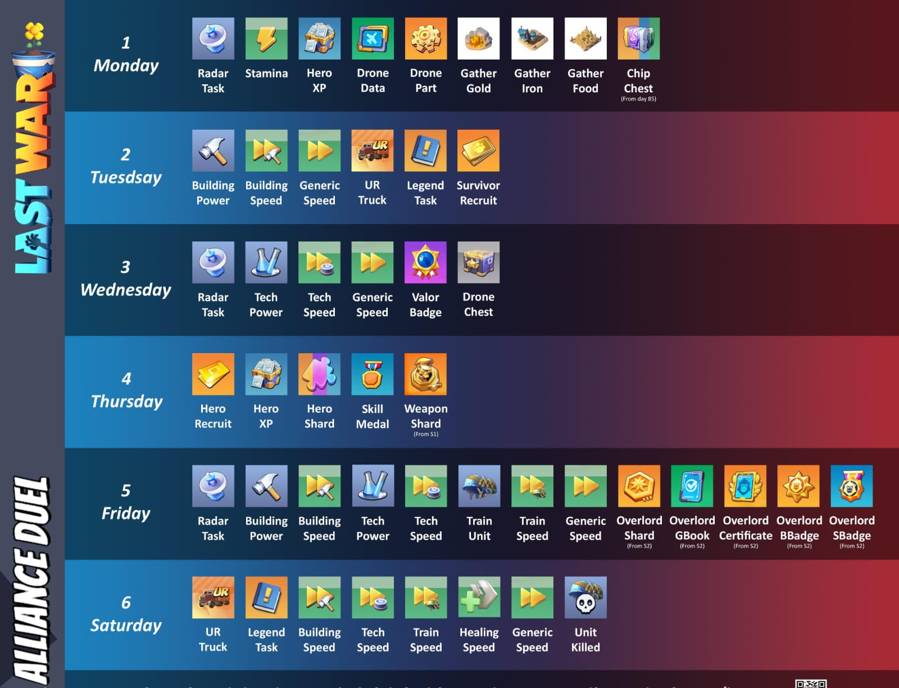

Vetra Alliance Guide
VS (Alliance Versus) is an event where two alliances are matched against each other. During several days, members must complete specific tasks to earn points for their alliance.
At the end, the alliance with the most points wins and receives better rewards. 🎁
The VS usually lasts several days and each day has a different mission type.
Each action generates individual points and alliance points.
The goal is simple:
Because of this, alliances usually organize members to save resources and speedups for the correct VS day.
Experienced players do not use everything every day. They save things like:
When the correct VS day arrives, they can gain a huge amount of points at once. 🚀
The better the alliance rank, the better the rewards.

📡 Radar Missions
USE: Sun 23:00 – Mon 22:59 | Tue 23:00 – Wed 22:59 | Thu 23:00 – Fri 22:59
SAVE: Mon 23:00 – Tue 22:59 | Wed 23:00 – Thu 22:59 | Fri 23:00 – Sun 22:59
🏗️ Construction
USE: Mon 23:00 – Tue 22:59 | Thu 23:00 – Sat 22:59
SAVE: Sat 23:00 – Mon 22:59 | Tue 23:00 – Thu 22:59
🔬 Research
USE: Tue 23:00 – Wed 22:59 | Thu 23:00 – Sat 22:59
SAVE: Sat 23:00 – Tue 22:59 | Wed 23:00 – Thu 22:59
🪖 Troop Training
USE: Thu 23:00 – Sat 22:59
SAVE: Sat 23:00 – Thu 22:59
🚚 UR Trucks
USE: Mon 23:00 – Tue 22:59 | Fri 23:00 – Sat 22:59
🦸 Hero EXP
USE: Sun 23:00 – Mon 22:59 | Wed 23:00 – Thu 22:59
🎫 Recruitment Tickets
USE: Wed 23:00 – Thu 22:59
🚁 Drone Items
Sun 23:00 – Mon 22:59 | Tue 23:00 – Wed 22:59 | Thu 23:00 – Fri 22:59
🌾 Resource Gathering
Sun 23:00 – Mon 22:59 | Fri 23:00 – Sat 22:59